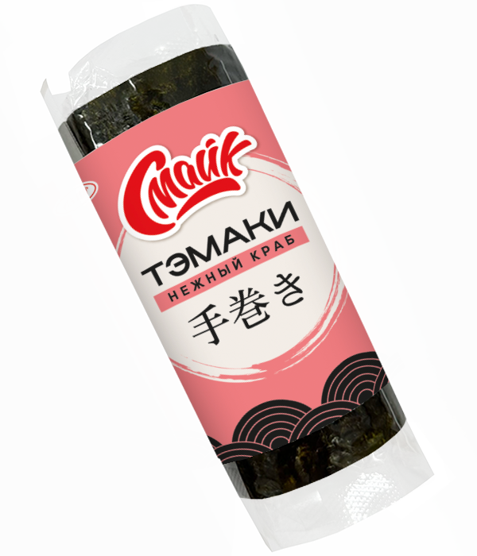

Тэмаки нежный краб

Состав:
рис, творожный сыр, крабовое мясо, нори.
Масса нетто:
120 г.
Пищевая и энергетическая ценность в 100 г продукта (средние значения):
Белки
– 3 г.
Жиры
– 5 г.
Углеводы
– 26 г.
Калорийность
– 170 ккал / 710 кДж.
Закрыть окно